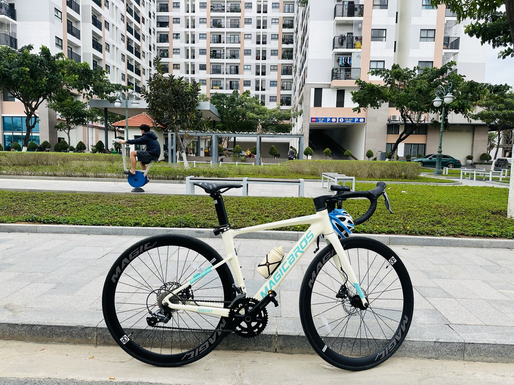

Mua nhà ở xã hội Nha Trang 2026: ai đủ điều kiện, hồ sơ cần gì?
Mỗi tuần tôi đều nhận được câu hỏi kiểu này: "Em thu nhập chục triệu, muốn an cư ở Nha Trang mà giá nhà thương mại cao quá — có cách nào không anh?"

Có. Và năm 2026 này, câu trả lời tên là nhà ở xã hội (NOXH) — chưa bao giờ kênh an cư này được Nhà nước đẩy mạnh như bây giờ. Bài này tôi gom một chỗ: ai đủ điều kiện theo quy định mới nhất, hồ sơ cần gì, và Khánh Hòa đang có những dự án nào.
Vì sao 2026 là năm đáng quan tâm NOXH nhất?
Ba tín hiệu cùng lúc, đều từ chính sách thật:
- Tín dụng cho NOXH được "cởi trói": từ 2026, dư nợ cho vay nhà ở xã hội không bị tính vào hạn mức tín dụng bất động sản của ngân hàng — nghĩa là ngân hàng thoải mái cho vay NOXH hơn hẳn nhà thương mại.
- Điều kiện thu nhập được NỚI: mức trần thu nhập để đủ điều kiện đã tăng lên đáng kể so với trước (chi tiết ngay dưới đây) — nhiều người từng "trượt oan" nay đủ điều kiện.
- Khánh Hòa đang dồn dập dự án: từ Nha Trang xuống Cam Ranh, hàng nghìn căn NOXH đang được triển khai — lần đầu tiên người mua có nhiều lựa chọn thật sự.
Ai đủ điều kiện mua? (quy định hiện hành 2026)
Hai điều kiện lớn nhất — nhà ở và thu nhập:
Về nhà ở: anh/chị chưa có nhà thuộc sở hữu của mình tại tỉnh nơi có dự án; nếu đã có thì diện tích bình quân phải dưới 15m² sàn/người.
Về thu nhập (mức mới, tính bình quân thực nhận 12 tháng gần nhất):
- Người độc thân: không quá 20 triệu đồng/tháng
- Độc thân đang nuôi con chưa thành niên: không quá 30 triệu đồng/tháng
- Vợ chồng: tổng thu nhập hai người không quá 40 triệu đồng/tháng
Trần vợ chồng 40 triệu/tháng là mức mà rất nhiều gia đình công chức, nhân viên văn phòng, công nhân kỹ thuật ở Nha Trang đủ điều kiện — nhiều người cứ nghĩ "chắc mình không thuộc diện" mà chưa từng kiểm tra.
Ngoài ra phải thuộc đúng nhóm đối tượng theo Luật Nhà ở (người thu nhập thấp đô thị, công nhân, cán bộ công chức viên chức, lực lượng vũ trang...) — nhóm phổ biến nhất là "người thu nhập thấp tại khu vực đô thị".
Hồ sơ cần chuẩn bị những gì?
Bộ hồ sơ đăng ký về cơ bản gồm 3 nhóm giấy tờ:
- Đơn đăng ký theo mẫu mới ban hành 2026 (chủ đầu tư từng dự án phát mẫu — đừng dùng mẫu cũ trên mạng).
- Giấy tờ chứng minh đối tượng: xác nhận của cơ quan/đơn vị nơi làm việc (với công chức, người lao động có hợp đồng) hoặc xác nhận của địa phương.
- Giấy tờ chứng minh điều kiện nhà ở và thu nhập: xác nhận thực trạng nhà ở tại nơi cư trú + xác nhận thu nhập (bảng lương/xác nhận của đơn vị; lao động tự do thì tự kê khai và chịu trách nhiệm).
Kinh nghiệm thật của tôi khi hỗ trợ hồ sơ: phần dễ trượt nhất không phải thu nhập — mà là giấy xác nhận thực trạng nhà ở làm sai mẫu, sai cấp xác nhận. Trước khi nộp, hỏi kỹ bộ phận tiếp nhận của chính dự án đó về mẫu và nơi xác nhận.

Khánh Hòa 2026 đang có những dự án NOXH nào?
Bức tranh đang sáng dần từ Bắc xuống Nam (trạng thái thay đổi theo thời điểm — liên hệ tôi để cập nhật mới nhất trước khi chuẩn bị hồ sơ):
- Nha Trang: cụm dự án liên tiếp tại khu An Bình Tân đang thành tâm điểm — Golden Square (CT-01): 772 căn hộ 35–77m², khởi công đầu 2026, tiếp nhận hồ sơ theo đợt trong năm nay (lưu ý: tỷ lệ đăng ký rất cao, quá số căn phải bốc thăm công khai theo Luật Nhà ở); kế bên là MK Riviera (CT-02) đang triển khai. Còn khu vực Phước Long – Lê Hồng Phong đã có các tòa NOXH bàn giao từ giai đoạn trước, hình thành cộng đồng dân cư đông đúc — chính quán bia của gia đình tôi cũng nằm ở tầng đế một chung cư nhà ở xã hội, nên tôi nhìn thấy cuộc sống ở đây mỗi ngày.
- Cam Ranh: dự án Happy Home quy mô gần 3.600 căn thấp tầng — được nhắc đến là dự án NOXH lớn nhất từ trước đến nay tại Khánh Hòa, mục tiêu hoàn thành trong năm 2026.
- Cam Lâm: các khu đô thị mới được duyệt đều kèm quỹ NOXH hàng trăm đến gần nghìn căn — nguồn cung của 2–3 năm tới.
3 lưu ý xương máu trước khi đăng ký
1. Đúng đối tượng, đứng tên thật. Đừng bao giờ "nhờ người đủ điều kiện đứng tên hộ" — rủi ro pháp lý toàn phần thuộc về người bỏ tiền.
2. NOXH có ràng buộc chuyển nhượng trong những năm đầu (quy định hiện hành là 5 năm, trừ một số trường hợp đặc biệt) — đây là nhà để Ở, không phải hàng lướt sóng. Nếu anh/chị tìm kênh đầu tư, hãy đọc bài thị trường giữa 2026 thay vì nhìn vào NOXH.
3. Cảnh giác "suất ngoại giao, phí chênh". Suất mua NOXH được xét duyệt theo hồ sơ, chấm điểm công khai. Ai chào bán "suất chắc chắn đậu" kèm khoản chênh vài chục đến vài trăm triệu — anh/chị đang được mời vào một giao dịch vừa rủi ro vừa có thể vi phạm pháp luật.
Quy định về đối tượng, thu nhập, hồ sơ nêu trên theo Luật Nhà ở 2023, Nghị định 100/2024 và các nghị định sửa đổi có hiệu lực đến 08/2026 — chính sách có thể tiếp tục điều chỉnh; trường hợp cụ thể nên đối chiếu với chủ đầu tư dự án và cơ quan quản lý tại thời điểm nộp hồ sơ.
Sống tử tế · Kiếm tiền hạnh phúc · Cho đi giá trị
Anh/chị muốn biết mình có thuộc diện mua NOXH không?
Nhắn tôi hoàn cảnh của anh/chị (công việc, thu nhập, tình trạng nhà ở) — tôi xem giúp có đủ điều kiện không và dự án nào tại Khánh Hòa đang phù hợp để chuẩn bị hồ sơ. Miễn phí.
Nhắn Zalo — 0869 668 638